vignettes/pisa_example.Rmd
pisa_example.Rmdperccalc is very flexible and can be used for any ordered categorical variable which has a theoretical order, such as education or occupation. In this case study we will calculate the percentile difference in mathematics test scores based on the education of the parents for several countries using the PISA 2006 and PISA 2012 datasets. Let’s load our packages:
percalc automatically loads pisa_2012 and pisa_2006 which are two datasets with all the information that we need. These two datasets have data for Estonia, Germany and Spain and contain the five test scores in Mathematics and the father’s education in the international ISCED classification. The first thing we have to do is make sure the categories are ordered and calculate the average test score for each student.
order_edu <- c("None", "ISCED 1", "ISCED 2", "ISCED 3A, ISCED 4", "ISCED 3B, C", "ISCED 5A, 6", "ISCED 5B") # Make ordered categories of our categorical variables and calculate avgerage # math test scores for each year pisa_2012 <- pisa_2012 %>% mutate(father_edu = factor(father_edu, levels = order_edu, ordered = TRUE)) pisa_2006 <- pisa_2006 %>% mutate(father_edu = factor(father_edu, levels = order_edu, ordered = TRUE)) # Merge them together pisa <- rbind(pisa_2006, pisa_2012)
Once the categories are ordered, perc_diff can calculate the percentile difference between the 90th and 10th percentile for the complete sample. For example:
perc_diff(data_model = pisa, categorical_var = father_edu, continuous_var = avg_math, percentiles = c(90, 10)) #> difference se #> 45.07312 14.18308
This means that the difference in Mathematics test scores between the 90th and 10th percentile of father education is 45 points with a standard error of 14 points. We can extrapolate this example for each country separately using dplyr::group_by. Since the result of perc_diff is a vector, to be able to work seamlessly with dplyr::group_by we will use perc_diff_df, which returns the same results but as a data frame:
With df_wrap we can just pass that to tidyr::nest and dplyr::mutate and calculate it separetely by year and country:
cnt_diff <- pisa %>% nest(data = c(-year, -CNT)) %>% mutate(edu_diff = lapply(data, function(x) perc_diff_df(x, father_edu, avg_math, percentiles = c(90, 10)))) %>% select(-data) %>% unnest(edu_diff) cnt_diff #> # A tibble: 6 x 4 #> year CNT difference se #> <dbl> <chr> <dbl> <dbl> #> 1 2006 Estonia 18.3 5.55 #> 2 2006 Germany 61.2 28.8 #> 3 2006 Spain 52.6 15.1 #> 4 2012 Germany 45.0 27.4 #> 5 2012 Spain 40.2 18.2 #> 6 2012 Estonia 17.0 9.88
We can see some big differences between, for example, Estonia and Spain. But even more interesting is plotting this:
cnt_diff %>% ggplot(aes(year, difference, group = CNT, color = CNT)) + geom_point() + geom_line() + theme_minimal() + scale_y_continuous(name = "Achievement gap in Math between the 90th and \n 10th percentile of father's education") + scale_x_continuous(name = "Year")

It looks like Estonia has a much smaller achievement gap relative to Spain and Germany but also note that both Germany and Spain have been decreasing their inequality. We can also try different achievement gaps to to explore the distribution:
# Calculate the gap for the 90/50 gap cnt_half <- pisa %>% nest(data = c(-year, -CNT)) %>% mutate(edu_diff = lapply(data, function(x) perc_diff_df(x, father_edu, avg_math, percentiles = c(90, 50)))) %>% select(-data) %>% unnest(edu_diff) # Calculate the gap for the 50/10 gap cnt_bottom <- pisa %>% nest(data = c(-year, -CNT)) %>% mutate(edu_diff = lapply(data, function(x) perc_diff_df(x, father_edu, avg_math, percentiles = c(50, 10)))) %>% select(-data) %>% unnest(edu_diff) cnt_diff$type <- "90/10" cnt_half$type <- "90/50" cnt_bottom$type <- "50/10" final_cnt <- rbind(cnt_diff, cnt_half, cnt_bottom) final_cnt$type <- factor(final_cnt$type, levels = c("90/10", "90/50", "50/10")) final_cnt #> # A tibble: 18 x 5 #> year CNT difference se type #> <dbl> <chr> <dbl> <dbl> <fct> #> 1 2006 Estonia 18.3 5.55 90/10 #> 2 2006 Germany 61.2 28.8 90/10 #> 3 2006 Spain 52.6 15.1 90/10 #> 4 2012 Germany 45.0 27.4 90/10 #> 5 2012 Spain 40.2 18.2 90/10 #> 6 2012 Estonia 17.0 9.88 90/10 #> 7 2006 Estonia -12.8 5.51 90/50 #> 8 2006 Germany 1.98 27.6 90/50 #> 9 2006 Spain 10.2 14.2 90/50 #> 10 2012 Germany -17.5 23.5 90/50 #> 11 2012 Spain -3.38 17.1 90/50 #> 12 2012 Estonia -17.0 9.34 90/50 #> 13 2006 Estonia 31.2 5.55 50/10 #> 14 2006 Germany 59.2 26.6 50/10 #> 15 2006 Spain 42.4 13.9 50/10 #> 16 2012 Germany 62.4 26.1 50/10 #> 17 2012 Spain 43.6 17.1 50/10 #> 18 2012 Estonia 34.0 9.91 50/10
Having this dataframe we can visualize all the three gaps in a very intuitive fashion:
final_cnt %>% ggplot(aes(year, difference, group = CNT, color = CNT)) + geom_point() + geom_line() + theme_minimal() + scale_y_continuous(name = "Achievement gap in Math between the 90th and \n 10th percentile of father's education") + scale_x_continuous(name = "Year") + facet_wrap(~ type)

It seems that the 90/50 and 50/10 differences are not symmetrical.
percalc also has a perc_dist function which calculates the distribution of the percentiles, so we can compare more finegrained percentiles rather than differences:
perc_dist(pisa, father_edu, avg_math) #> # A tibble: 100 x 3 #> percentile estimate std.error #> <int> <dbl> <dbl> #> 1 1 0.853 1.64 #> 2 2 1.74 3.20 #> 3 3 2.65 4.69 #> 4 4 3.60 6.10 #> 5 5 4.57 7.45 #> 6 6 5.57 8.72 #> 7 7 6.59 9.93 #> 8 8 7.64 11.1 #> 9 9 8.71 12.2 #> 10 10 9.80 13.2 #> # … with 90 more rows
Here we get the complete percentile distribution with the test score in mathematics for each percentile. This can be easily scaled to all country/year combinations with our previous code:
cnt_dist <- pisa %>% nest(data = c(-year, -CNT)) %>% mutate(edu_diff = lapply(data, function(x) perc_dist(x, father_edu, avg_math))) %>% select(-data) %>% unnest(edu_diff) cnt_dist #> # A tibble: 600 x 5 #> year CNT percentile estimate std.error #> <dbl> <chr> <int> <dbl> <dbl> #> 1 2006 Estonia 1 0.647 0.388 #> 2 2006 Estonia 2 1.31 0.762 #> 3 2006 Estonia 3 2.00 1.12 #> 4 2006 Estonia 4 2.71 1.47 #> 5 2006 Estonia 5 3.43 1.81 #> 6 2006 Estonia 6 4.17 2.13 #> 7 2006 Estonia 7 4.93 2.44 #> 8 2006 Estonia 8 5.70 2.74 #> 9 2006 Estonia 9 6.48 3.02 #> 10 2006 Estonia 10 7.28 3.30 #> # … with 590 more rows
Let’s limit the distribution only to the 10th, 20th, 30th… 100th percentile an compare for country/years:
cnt_dist %>% mutate(year = as.character(year)) %>% filter(percentile %in% seq(0, 100, by = 10)) %>% ggplot(aes(percentile, estimate, color = year, group = percentile)) + geom_point() + geom_line(color = "black") + scale_y_continuous(name = "Math test score") + scale_x_continuous(name = "Percentiles from father's education") + scale_color_discrete(name = "Year") + facet_wrap(~ CNT) + theme_minimal()

Here the red dots indicate the year 2006 and the bluish dots year 2012, the black line between them indicates the change over time. Here we can see that although Germany and Spain are decreasing (as we saw in the plot before), the composition of the change is very different: Spain’s decrease is big all around the distribution whereas Germany’s concentrate on the top percentiles.
This type of analysis serves well to disentangle and decompose distributions of ordered categorical. This vignette looked to show the power of this techniqe and how it can be used in practically any setting with an ordered categorical variable and a continuous variable.
If you use this in a publication, remember to cite the software as:
#>
#> To cite perccalc in publications use:
#>
#> Cimentada, (2019). perccalc: An R package for estimating percentiles
#> from categorical variables. Journal of Open Source Software, 4(44),
#> 1796, https://doi.org/10.21105/joss.01796
#>
#> A BibTeX entry for LaTeX users is
#>
#> @Article{,
#> doi = {10.21105/joss.01796},
#> url = {https://doi.org/10.21105/joss.01796},
#> year = {2019},
#> publisher = {The Open Journal},
#> volume = {4},
#> number = {44},
#> pages = {1796},
#> author = {Jorge Cimentada},
#> title = {perccalc: An R package for estimating percentiles from categorical variables},
#> journal = {Journal of Open Source Software},
#> }